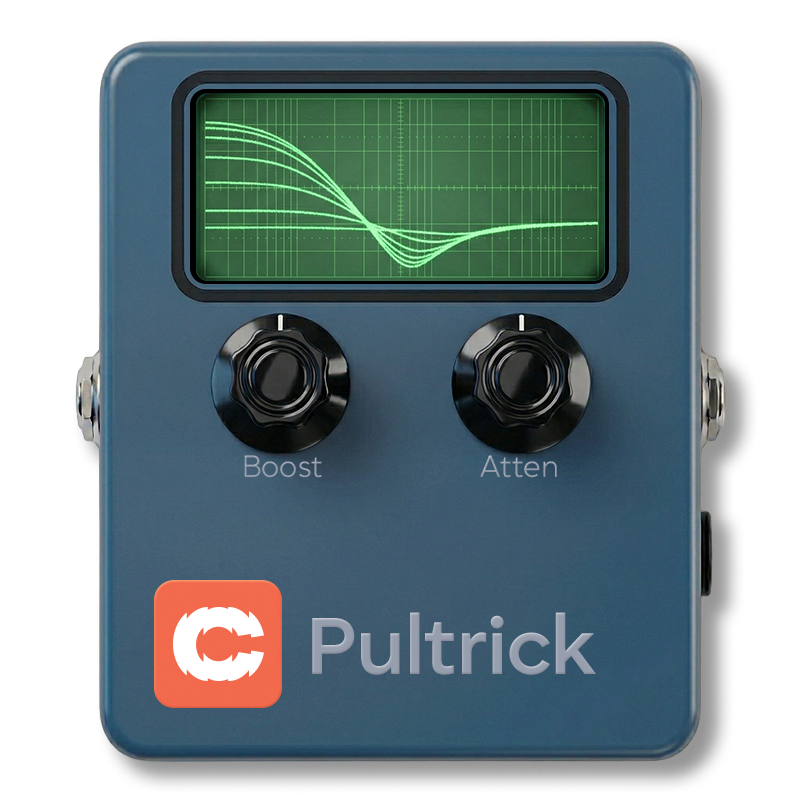
EQs, Filters & Dynamics
Version v1.01 · 06/04/2026
| Category | EQs, Filters & Dynamics |
| Channels | Mono in / mono out |
| Version | 1.01 (06/04/2026) |
Cognate Pultrick is a faithful model of the EQ1-P circuit — valve warmth, transformer iron, and the famous boost-cut trick that's been quietly shaping great bass tone for sixty years. Boost and cut the same low frequency at the same time and something unexpected happens: a complex, interactive response that tightens and fattens at once, in a way no conventional EQ can replicate. Pultrick captures the full circuit — not just the EQ curves, but the component interactions, the valve saturation, and the iron transformer that gives the real thing its low-end grip and top-end air.
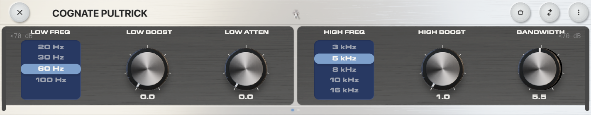
Page 1 of 2
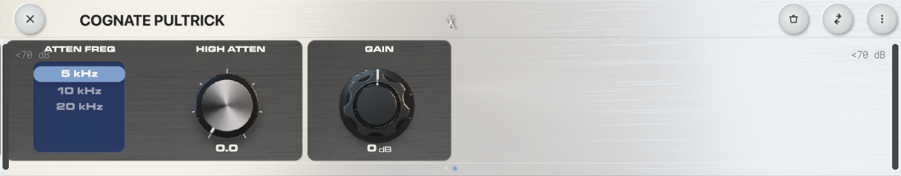
Page 2 of 2
Turns off the EQ and passes your bass straight through, including the modelled valve and transformer stages. Use it to A/B Pultrick against the dry signal — even with all the EQ controls at zero, the circuit colour is still in the path when the plugin is active.
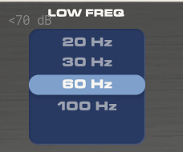
The low-band centre frequency. Pick the option that sits where you want to feel the action, then use Low Boost and Low Atten to shape it.
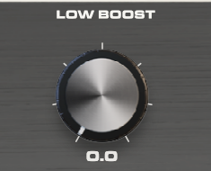
Boost amount at the Low Freq centre. On its own this is a gentle low-shelf-like lift. Where it gets interesting is when Low Atten is also up: the two together create a complex, asymmetric curve that pushes the low end forward while pulling out the muddy region just above it. That's the Pultec trick — and it sounds quite different from any conventional EQ doing the same thing.
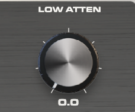
Cut amount at the Low Freq centre. The cut sits at a slightly higher frequency than the boost — the original designers' "mistake" that turned the EQ into something interactive. Use it on its own to clean up mud, or alongside Low Boost for the famous boost-and-cut trick. Push both for the iconic Pultec low-end shape.
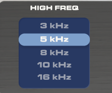
The high-band centre frequency for the boost. This is a peaking filter — the lift sits at this frequency with the width set by Bandwidth.
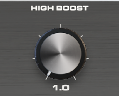
Boost amount at the selected High Freq. The Pultec high band has a famously musical character — push it harder than you would on a normal EQ; it stays sweet rather than turning brittle. Pair with Bandwidth to control how broad or focused the lift is.
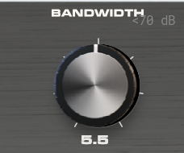
The Q (width) of the high-frequency boost peak. Low values make the boost narrow and surgical — useful for picking out a specific harmonic. High values make it broad and gentle, the way most engineers actually use a Pultec for high-end air. The default sits in the middle.
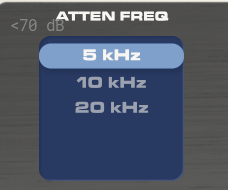
Centre frequency for the high-frequency cut, separate from the boost frequency. Lets you boost at one high frequency and cut at another — useful for adding sheen at 8 kHz while taming harshness at 5 kHz, for example.
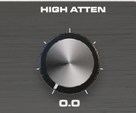
Cut amount at the Atten Freq. Use it to roll off harshness without affecting the air added by the boost band. The Pultec high-cut is gentle and broad — closer to a tilt than a notch — so it sounds natural even at heavy settings.
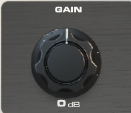
Output level. EQ moves change perceived loudness — use Gain to match the bypassed and engaged volumes so engaging Pultrick is a tonal change, not a level jump. Pushing this hot also drives the modelled output stage a little harder, adding subtle saturation if you want it.